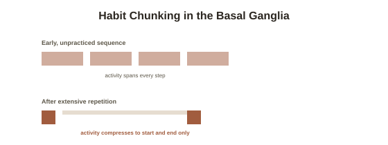

Chapter 8: Rewiring Habits
Chapter 7 covered deliberate, effortful skill-building. Habits work through a related but distinct plasticity mechanism — one that specifically produces automatic, low-effort behavior rather than skilled, attention-demanding performance, and understanding the difference explains both why habits are so hard to consciously override and why they can, with the right approach, be deliberately rebuilt.
The habit loop, and where it physically lives
Research led by MIT neuroscientist Ann Graybiel identified the neural basis of what journalist Charles Duhigg later popularized as the habit loop: a cue, a routine, and a reward, with repeated cycling through the loop shifting behavioral control from brain regions involved in deliberate, effortful decision-making toward the basal ganglia (a cluster of subcortical structures involved in habit formation, automatic movement, and reward processing) — a genuinely different neural pathway from the more cortex-heavy circuits involved in Chapter 6's deliberate practice. Graybiel's research recording directly from rodent basal ganglia during habit formation found a specific, measurable signature: neural activity that initially spans an entire behavioral sequence gradually compresses to bookend just its start and end, described as "chunking" — the brain increasingly treats a well-practiced sequence as one automatic unit rather than a series of separately decided steps.
Why this makes habits resistant to willpower
This chunking mechanism explains something people experience directly but rarely have a mechanistic account for: a strong habit doesn't feel like a series of small decisions you're consciously making and could just as easily decide differently — it feels closer to something that happens with minimal deliberate involvement at all, because a substantial share of the behavioral control genuinely has shifted to a faster, more automatic circuit that doesn't route heavily through the same regions responsible for effortful, conscious choice. This is a direct, mechanistic reason why trying to break a strong habit through willpower alone, in the moment of temptation, is fighting an uphill mechanistic battle — the automatic pathway got built exactly the way Chapter 2's LTP mechanism predicts, through extensive repetition, and undoing it requires working with that same mechanism rather than simply overriding it by force of will each time.

Rebuilding, not just suppressing: the cue-routine-reward substitution
Consistent with Chapter 2's point that LTD (active weakening) matters as much as LTP (active strengthening), habit research suggests the most effective approach to changing an established habit isn't simply trying to suppress the old routine — it's keeping the same cue and reward, while deliberately substituting a different routine in between. Duhigg's and Graybiel's work both point to this specific structure as considerably more durable than pure suppression, because it works with the existing chunked loop rather than trying to eliminate it outright — the cue-and-reward architecture stays largely intact, with only the middle, behavioral component genuinely rebuilt through the same repeated-practice mechanism that built the original habit.
How long this actually takes, and where the "21 days" myth comes from
A frequently repeated claim holds that a new habit forms in 21 days — a figure with no strong grounding in controlled habit-formation research, traceable to a mid-20th-century plastic surgeon's informal observations about patients adjusting to appearance changes, not a measured habit-automaticity study. A 2010 study by researcher Phillippa Lally, actually measuring time to automaticity for real participants adopting a new daily behavior, found it took a median of 66 days to reach a plateau in automaticity, with substantial individual variation (ranging from 18 to 254 days depending on the person and the specific behavior) — a genuinely different, more honest, and more variable number than the popularized figure, and a good example of a specific claim worth actively correcting given how widely repeated it still is.
Why belief still matters here, in a narrower way than for deliberate skills
Unlike Chapter 6's deliberate practice, where self-efficacy directly shapes whether someone sustains difficult, attention-demanding effort, habit formation is less about believing you can succeed at any given moment and more about believing the process is genuinely gradual and non-linear — expecting rapid, effortless automaticity (the 21-day myth's implicit promise) sets up a specific failure mode where normal early-stage difficulty gets misread as the approach not working, leading to premature abandonment of a substitution routine that, per Lally's data, may simply need considerably more time and repetition than expected to fully take hold.
Try this
Ideas for noticing or testing this in your own life.
- If you're trying to change a habit, identify its actual cue and reward first, then design a substitute routine that keeps both intact — this structure has stronger evidence behind it than trying to simply suppress the old behavior through willpower alone.
- Recalibrate your timeline expectation to Lally's real 66-day median (with wide individual variation) rather than the popular 21-day figure — a more accurate expectation makes early difficulty less likely to be misread as failure.
Worth pulling on?
A few loose threads from this chapter — if any of these genuinely grab you, that's a good sign of where to go next.
- A specific practice, built entirely around deliberately directing attention rather than automating it away, produces its own well-documented structural brain changes. → The subject of the next chapter: meditation and structural brain change.
- Automatic, low-effort processing versus deliberate, effortful processing is a broader distinction covered directly elsewhere in this library. → Already in the library: Cognitive Biases & Judgment covers this same dual-process distinction from a decision-making angle.